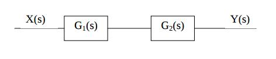
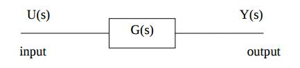
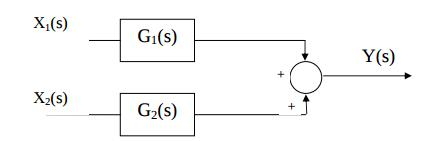
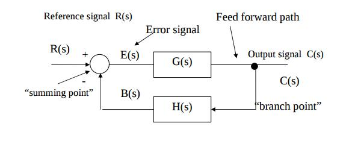

Lecture 6 - Notes
January 19th, 2016
Block Diagrams
- A block diagram is a diagram of a system in which the system is represented as a a series of connected systems.
Basic Structures
Series (Cascade)
- Defined by

Open Loop
- No feedback loop therefore any disturbance or change in conditions may reduce the ability to complete the desired task

Parallel

- Defined by
Closed Loop (Feedback Loop)
- The output of a system is routed back as an input to the system (the system feeds back into itself)

- Open-loop transfer function
Signal Flow Graph Rules
Signal-Flow Graph (Mason Graph)
- Specialized simplification of a block diagram
- Summing symbols and takeoff points are eliminated and are replaced with nodes
- The components or subsystems are